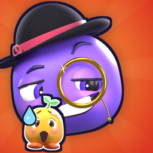

TRUST ME
A totally fair game. *not actually fair
TRUST ME - A Fair Game: Privacy Policy
Last updated: 27 September 2026
TRUST ME ("the app") is made by Rage Games (Nazme Aiman Bin Yunus Yunus).
We collect as little as possible, and never your identity. The app has no accounts and never asks for your name, email, contacts or photos. We don't sell data, and we don't track you across other apps or websites.
- No accounts. There's no sign-up or login.
- Stored on your iPhone. Your progress (the levels you've cleared) and your settings (sound, vibration) are stored locally on your iPhone; deleting the app deletes them. Your death totals are also sent to Game Center if you're signed in (see Scoreboards), and anonymously to GameAnalytics (see below).
- Anonymous gameplay analytics. To find out which levels are too hard or not funny, the app sends anonymous gameplay events to GameAnalytics, our analytics provider. These include level started, died (and on what), level cleared, level skipped, and left a level.
- What comes with them: a random device identifier (Apple's identifier-for-vendor, which resets if you delete the app), device model, iOS version, app version, session start and length, and your approximate country, which GameAnalytics works out from your IP address.
- What we don't use: the advertising identifier (IDFA). The data isn't linked to your identity and isn't used for advertising.
- GameAnalytics processes it under its own privacy policy.
- Microphone (VOICE). If you record your own sounds on the VOICE screen, the app uses the microphone only while that screen is open, and keeps only what you record while holding the record button. The recordings are saved on your iPhone and used as the game's sound effects. They are never uploaded or sent to us. Reset a sound on the VOICE screen, or delete the app, to delete them. Analytics only notes which sound slot you recorded (for example, "death"), never any audio.
- Your voice in clips you share. Video clips you choose to share (CLIP, SHARE THE TAPE) include the game's sounds, and if you've recorded your own, your voice. The share screen says "WITH YOUR VOICE" when it's in, and the microphone button next to SHARE switches it off (game sounds only). The clip goes only where you send it through the iPhone share sheet.
- The in-app purchase (THE FINALE). Levels 1–50 are free. Levels 51–60 and future levels are one optional purchase, processed entirely by Apple. We never see your payment details or your Apple ID. The app only learns whether the purchase was made (to unlock the levels), and sends an anonymous analytics event when the offer is shown or bought.
- Reminders (notifications). After you clear level 3, the app asks once whether it may send reminders. They are scheduled on your iPhone (local notifications), and no server or personal data is involved. Turn them off any time in iOS Settings.
- Sharing. The share buttons make a picture (or a short video clip) of your death count (with a snapshot of your last death in the game) and open the standard iPhone share sheet. Nothing is sent anywhere unless you pick an app or contact to share it with. If you choose "Save Image", it goes to your Photos. The snapshot of your last death is kept on your iPhone only.
- Duo mode. Playing Duo connects your phone to your friend's through Unity Gaming Services (Relay and Lobby). To do that, Unity gives the app an anonymous player ID (no name, email or account), and your moves are relayed between the two phones while you play. Nothing about the game is stored after the session, and there is no chat. Unity processes this under its own privacy policy.
- Scoreboards (Game Center). If you're signed in to Apple Game Center, your scores (fewest deaths in a ranked run of every level, the time of that run, and your total deaths) are sent to Apple's Game Center leaderboards, where other players can see them next to your Game Center nickname. Apple runs Game Center under its own privacy policy; we never see your Apple Account. You can turn Game Center off in iOS Settings.
- Beta testing. If you test through TestFlight, Apple may share crash reports and the feedback you choose to send with us, under Apple's TestFlight terms. We only use them to fix the game.
- Children. The app doesn't knowingly collect information from anyone, including children.
The app has no ads. If a future version adds ads, this policy will be updated before that version is released, and the change will be listed here.
Changes: 27 Sep 2026: added the optional one-time purchase (THE FINALE) and local reminders. Earlier on 27 Sep 2026: added the microphone for VOICE (recordings stay on your iPhone unless you share a clip with your voice in it). 24 Sep 2026: added anonymous gameplay analytics (GameAnalytics) and Game Center scoreboards.
Contact: nazmeaimandev@gmail.com